Ходовая часть, трансмиссия, рулевое управление и тормозная система
Передачу крутящего момента от двигателя на ведущие колеса автомобиля обеспечивает трансмиссия, а комфортное перемещение автомобиля по дороге, со сглаживанием вибраций, тряски и т. п. — его ходовая часть. Кроме этого, в процессе езды на автомобиле водитель постоянно изменяет и корректирует направление его движения, периодически снижает скорость, останавливается, причем иногда довольно резко. Все эти действия осуществляются с помощью механизмов управления автомобиля, к которым относятся рулевое управление и тормозная система.
В данной главе мы рассмотрим устройство этих важнейших агрегатов легкового автомобиля.
Назначение и устройство ходовой части автомобиляГлавное назначение ходовой части автомобиля состоит в том, чтобы связать колеса с его кузовом, погашая возникающие в процессе езды колебания и обеспечивая плавность и мягкость хода, а значит — и комфортность поездки.
Стоит отметить, что полностью устранить тряску и вибрацию невозможно даже в самых новых и комфортабельных машинах. Но все равно значение ходовой части в этом плане трудно переоценить: достаточно вспомнить, какие ощущения испытывает велосипедист при езде по неровной дороге.
Ходовая часть современного автомобиля включает в себя подвеску передних и задних колес, а также и сами колеса с шинами.
ПодвескаПодвеска— элемент ходовой части, который предотвращает передачу колебаний и вибраций при езде по неровной дороге на кузов автомобиля.
Подвеска характеризуется тем, что колеса к кузову крепятся не жестко. Это наглядно можно увидеть, подняв машину на подъемнике или приподняв ее домкратом возле любого колеса: расстояние от колес до кузова увеличится, колеса повиснут свободно, держась на пружинах, рычагах и иных непонятных для новичка деталях. Вот из этих пружин, рычагов и других частей и состоит подвеска современного автомобиля.
Сущность этого способа крепления колес к кузову состоит в том, чтобы кузов автомобиля при движении мог перемещаться относительно колес. При этом сглаживаются вертикальные, поперечно-угловые и иные колебания, что обеспечивает комфортность поездки.
Все подвески делятся на два вида: зависимаяи независимая.Современные автопроизводители оснащают выпускаемые автомобили, как правило, независимой подвеской (рис. 3.1), поскольку она соответствует современным критериям комфорта и безопасности.
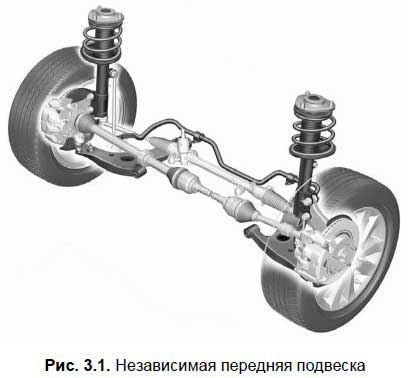
Если автомобиль оборудован зависимой подвеской, то его колеса, находящиеся на одной оси, связаны негнущейся жесткой балкой. Следовательно, когда одно колесо наезжает на яму или попадает в ухаб, и из-за этого наклоняется на определенный угол, то второе колесо этой оси также вынужденно наклоняется на такой же угол.
Независимая подвеска сконструирована иначе. В данном случае колеса, находящиеся на одной оси, не связаны жесткой балкой. Следовательно, если одно колесо попадает в яму или в ухаб и при этом изменяет свое положение, на втором колесе это никак не отражается: оно остается в прежнем положении.
В состав любой подвески входят упругие элементы — рессоры.Они предназначены для смягчения вибраций и ударов, передаваемых от неровностей проезжей части на кузов автомобиля. В настоящее время распространены рессоры двух видов: пружинныеи пластинчатые.
Пружинная рессора (рис. 3.2) представляет собой большую мощную пружину, обладающую высокой сопротивляемостью.
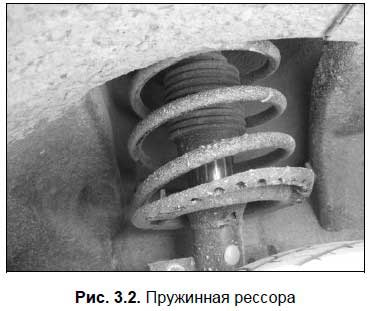
Что касается пластинчатой рессоры, то она состоит из нескольких рядов продольных металлических пластин, которые наложены друг на друга так, что внизу оказывается самая длинная пластина, на ней — чуть покороче, далее — еще короче, и наверху — самая короткая пластина. Такая конструкция, выполненная из крепкого металла, решает сразу две проблемы: она обеспечивает мощное сопротивление и, в то же время, — необходимую упругость.
Важными элементами подвески являются амортизаторы(рис. 3.3), которые гасят колебания и раскачивания кузова. Это достигается благодаря сопротивлению, образующемуся при перетекании жидкости через калиброванные отверстия из одной емкости в другую и обратно. Такие амортизаторы называются гидравлическими. Но есть и газовые амортизаторы, в которых вместо жидкости используется газ.
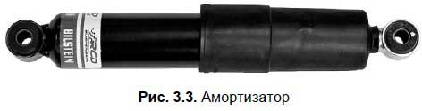
Находится амортизатор между кузовом и колесной осью (балкой). Он состоит из проушин (верхней и нижней), защитного кожуха, штока, цилиндра и поршня с клапанами. Проушины предназначены для крепления амортизатора, а защитный кожух — для защиты верхней части амортизаитора.
В подвесках современных автомобилей используется специальный элемент, который оказывает сопротивление опрокидывающей силе и предотвращает переворачивание автомобиля на поворотах. Он называется стабилизаторпоперечной устойчивости, его главная задача — уменьшение наклонения кузова при прохождении поворотов, а также повышение его устойчивости и улучшение управляемости автомобиля.
Стабилизатор поперечной устойчивости работает следующим образом. При прохождении поворота кузов автомобиля с внутренней стороны поворота приподнимается над поверхностью дороги, а с внешней стороны — наоборот, прижимается к ней. Это создает благоприятные условия для опрокидывания автомобиля. Но стабилизатор, прижавшись к поверхности вместе с автомобилем с одной его стороны, одновременно прижимает и другую его сторону. Когда же одно из колес наезжает на неровность, то стабилизатор помогает максимально быстро вернуть его в первоначальное положение.
Развал и схождение колесМногие новички и не подозревают о том, что передние колеса автомобиля установлены не параллельно друг другу и не перпендикулярно поверхности проезжей части. Они немного повернуты одно к одному (это называется «схождение колес»), а относительно вертикальной оси — немного «развалены» в стороны (это называется «развал колес»). Эти два явления объединены под общим названием «углы расстановки колес».
Помни об этом.
Знайте, что управляемость транспортного средства и его устойчивость на дороге во многом определяются правильностью выставленных углов расстановки передних колес.
Изначально развал и схождение колес выставляются на предприятии — производителе автомобиля, но при необходимости их можно откорректировать в процессе его эксплуатации.
В общих чертах ключевые функции углов расстановки колес перечислены ниже:
? компенсирование лишних нагрузок на важные детали подвески и подшипники;
? уменьшение усилий, которые необходимо прилагать к рулевому колесу при выполнении поворотов;
? обеспечение устойчивости прямолинейного движения машины;
? равномерное качение на поворотах передних колес без проскальзывания;
? самостоятельный возврат передних колес в прямолинейное положение по завершении поворота;
? частичное поглощение ударов по подвеске от ям, выбоин, иных неровностей дороги.
Каждый водитель должен контролировать правильность выставления развала и схождения колес. Если они выставлены неправильно, автомобиль будет «тянуть» в ту или другую сторону. Это противоречит всем требованиям безопасности, особенно при движении по дороге со скользким покрытием и в прочих сложных условиях. Еще один негативный момент состоит в том, что шины колес автомобиля будут изнашиваться неравномерно и как бы «срезаться» вдоль одной кромки колеса.
Назначение и устройство колесКолесо— это устройство, на которое поступает крутящий момент от двигателя автомобиля. Оно обеспечивает движение автомобиля за счет этого крутящего момента, а также за счет сцепления поверхности колеса с дорожным покрытием. Кроме этого, колеса автомобиля оказывают прямое влияние на плавность хода, устойчивость и управляемость машины, ее способность набирать скорость и останавливаться и, в конечном итоге — на безопасность его движения.
Колесо состоит из резиновой шины и металлического диска (рис. 3.4), на который надевается шина. Шины бывают камерные и бескамерные. На современных автомобилях используются бескамерные шины, в них воздух накачивается в пространство между покрышкой и колесным диском. Что касается камерных шин, то они применялись на старых советских машинах — «Жигули», «Москвич» и др., и сегодня почти не используются. В состав камерной шины входит покрышка и камера: воздух накачивается в камеру, а поверх нее надевается покрышка.
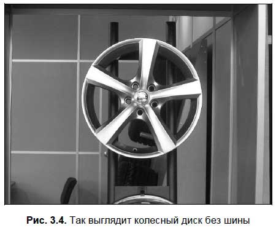
Покрышка колеса состоит из металлического каркаса (корда), протектора, боковин и бортов.
Конструктивной основой покрышки является корд.Он внешне представляет собой нечто вроде металлической ткани, сплетенной из тонкой проволоки. Корд воспринимает давление как изнутри покрышки, производимое сжатым воздухом, так и снаружи, от поверхности проезжей части. На современных колесах используются корды двух видов: с диагональным или с радиальным расположением нитей.
Знайте.
ПДД категорически запрещают эксплуатировать автомобиль, шины которого имеют порезы, разрывы и иные местные повреждения, обнажающие корд. Также запрещено движение на автомобиле, если у покрышки имеются расслоения корда, а также отслоения протектора и боковины. Нельзя ставить на одну ось радиальные шины совместно с диагональными, а также шины с разным рисунком протектора.
Протектор(рис. 3.5) — это верхняя часть покрышки, обеспечивающая сцепление колеса с дорожным покрытием.
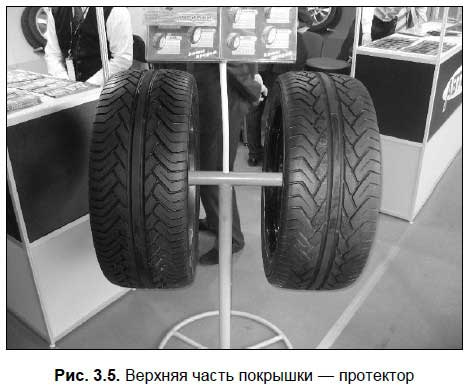
С конструктивной точки зрения протектор — это толстый слой плотной резины с нанесенным рисунком. Рисунок протектора представляет собой набор борозд, канавок и выступов, который образует сложный рельеф. Это необходимо для обеспечения хорошего и надежного сцепления автомобиля с поверхностью дорожного полотна во избежание заносов. По мере эксплуатации автомобиля шина изнашивается и рисунок протектора стирается; в этом случае необходимо заменить изношенные покрышки новыми.
В настоящее время существуют покрышки с разным рисунком протектора: дорожным, специальным, универсальным и др. В зависимости от рисунка протектора все покрышки можно разделить на две категории: зимние и летние. Зимняя резина отличается более глубоким и рельефным рисунком протектора, что обеспечивает хорошее сцепление даже на обледенелой дороге, и предотвращает пробуксовку колес при движении по сугробам.
Ранее мы уже говорили о том, что шина одевается на металлический колесный диск. В свою очередь, диск крепится болтами непосредственно либо к ступице колеса, либо к полуоси. Именно колесный диск получает крутящий момент от двигателя автомобиля.
Все автомобильные шины промаркированы. Маркировка показывает данные об основных характеристиках шины. Эта маркировка имеет четыре реквизита:
? ширина профиля покрышки, выраженная в миллиметрах;
? отношение высоты профиля покрышки к ее ширине в процентном выражении;
? вид покрышки — с диагональным или с радиальным расположением нитей корда;
? посадочный диаметр шины, выраженный в дюймах.
Вот пример маркировки шины: 185/75/ R14. Это означает, что данная шина обладает шириной профиля 185 миллиметров, соотношение высоты профиля и ширины составляет 75 %, расположение нитей корда — радиальное (R), а посадочный диаметр шины составляет 14 дюймов (один дюйм равняется 2,54 сантиметра).
Узнать, шины какой маркировки должны использоваться на вашем автомобиле, можно в его руководстве по эксплуатации.
Каждое колесо автомобиля в обязательном порядке должно быть «отбалансировано». С этой целью на колесный диск крепятся специальные металлическое грузики. Такое крепление делается на станции технического обслуживания или на любом пункте, выполняющем шиномонтажные работы. На неотбалансированных колесах вы сможете ехать только очень медленно: при движении по трассе с большой скоростью такие колеса будут вибрировать, что будет передаваться на руль и на кузов вашего автомобиля.
Учтите.
Нарушенная балансировка колес или ее отсутствие приводит к преждевременному износу не только шин, но и элементов подвески автомобиля, рулевого механизма, тормозной системы и трансмиссии, что в конечном итоге выльется в сложный и дорогостоящий ремонт.
Помни об этом.
Трясущийся автомобиль хуже поддается управлению, что особенно актуально при езде по скользкой дороге либо в условиях ограниченной видимости.
Во всех колесах автомобиля (включая «запаску») должно поддерживаться одинаковое давление воздуха. Для большинства современных легковых машин оптимальным является давление в две атмосферы. Учтите, что на глаз определить давление может только профессионал, проработавший за рулем как минимум лет 15–20. Поэтому для измерения давления в шинах следует использовать специальный прибор, который называется «манометр».
Устройство и назначение коробки переключения передачКоробка переключения передач(сокращенно КПП) предназначена для изменения крутящего момента по величине и направлению и передачи его от сцепления (с механизмом сцепления мы познакомимся в следующем разделе) к ведущим колесам. Другими словами, с помощью КПП при постоянной мощности двигателя происходит изменение силы тяги на ведущих колесах автомобиля. Также КПП позволяет включить задний ход и на неограниченное время (в отличие от сцепления) осуществлять отсоединение двигателя от ведущих колес.
Автомобили могут оснащаться механическойлибо автоматическойКПП. Отметим, что механическая КПП является сегодня более распространенной, она устанавливалась на все автомобили до изобретения «автомата», который появился примерно в середине прошлого столетия.
Механическая КПП содержит следующие основные элементы: картер, первичный вал, вторичный вал, промежуточный вал, шестерни, дополнительный вал, шестерни заднего хода, синхронизаторы, механизм переключения передач, замковое устройство, блокировочное устройство, рычаг переключения передач. Отметим, что рычаг коробки переключения передач (сокращенно рычаг КПП) — единственный из перечисленных элементов, который доступен из салона (рис. 3.6).
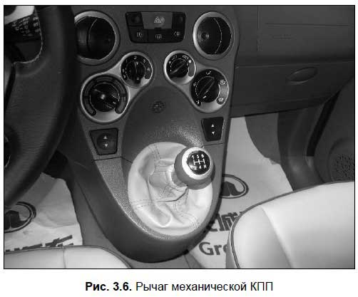
КартерКПП закреплен на картере сцепления, который, в свою очередь, установлен на картере двигателя. Половину объема картера КПП занимает трансмиссионное масло, используемое для смазки деталей КПП. Замена масла в КПП осуществляется редко, на многих современных автомобилях его и менять не нужно (оно заливается на заводе-изготовителе и рассчитано на весь срок эксплуатации автомобиля). Это обусловлено тем, что в КПП по сравнению с мотором детали вращаются намного медленнее. Следовательно, они не так интенсивно изнашиваются, и в масло попадает значительно меньше продуктов их работы (металлических опилок, стружки и др.). Поэтому находящееся в КПП масло дольше сохраняется в состоянии, пригодном для использования.
Картер КПП содержит подшипники, на которых вращаются валы. Эти валы имеют наборы шестерен с разным числом зубьев. Для того чтобы передачи переключались плавно и бесшумно, в КПП используются синхронизаторы. Сущность их работы состоит в том, что они уравнивают угловые скорости вращающихся шестерен.
Основным узлом КПП является механизм переключения передач,с помощью которого, собственно, и осуществляется смена передач. Управление этим механизмом производится с помощью рычага, расположенного в салоне. Обычно рычаг КПП находится между передними сиденьями и одновременно перед ними, но он может располагаться, например, и на рулевой колонке.
Замковое устройство предотвращает включение одновременно двух передач, а блокировочное устройство предотвращает самопроизвольное выключение передач.
Основной принцип работы КПП базируется на том, что разные шестерни имеют разное число зубьев. Предположим, что коленвал вращается со скоростью 3000 оборотов в минуту и передает этот крутящий момент на первичный вал с шестерней, которая входит в зацепление с другой шестерней, большей по размеру и имеющей в два раза больше зубьев. Вал, на котором установлена эта вторая шестерня, будет вращаться со скоростью в два раза меньшей, т. е. 1500 оборотов в минуту. При использовании разных сочетаний входящих в зацепление шестерен (установленных на разных валах) этот принцип позволяет получать и передавать на ведущие колеса разный крутящий момент. В результате при вращении коленчатого вала со скоростью 3000 оборотов в минуту ведущие колеса при включении соответствующих передач могут вращаться, например, со скоростью 1500 оборотов в минуту или 2000 оборотов в минуту и т. д.
Для движения задним ходом в КПП предусмотрена возможность включения задней передачи. В данном случае вторичный вал КПП вращается в обратную сторону благодаря использованию нечетного количества входящих в зацепление шестерен (в этом случае направление крутящего момента меняется на противоположное). Эта «нечетная» шестерня находится на дополнительном валу КПП.
Водитель автомобиля самостоятельно переключает передачи с помощью рычага, в зависимости от условий езды, режима работы двигателя, его возможностей, а также иных факторов. На современных легковых автомобилях чаще всего устанавливается пятиступенчатая коробка передач: это означает, что машина имеет пять передач для движения в переднем направлении и одну передачу — для движения в заднем направлении.
Помните, что чем ниже передача — тем она сильнее, но в то же время — медленнее. Следовательно, самыми сильными передачами, используемыми для начала движения и езды на небольшой скорости, являются первая и задняя передачи. Когда они включены, мотор легко вращает ведущие колеса, но разогнаться до высокой скорости вы не сможете: двигатель будет громко «реветь», но быстрее 10–20 км/ч автомобиль не поедет. Поэтому после начала движения и набора минимальной скорости необходимо перейти на вторую передачу — менее мощную, но более скоростную. Далее можно развить скорость 40–50 км/ч для перехода на третью передачу — еще более скоростную и менее мощную и т. д.
Важно.
При движении на низких передачах автомобиль расходует больше топлива, чем при движении на высоких. Другими словами, чем выше передача — тем экономичней езда.
Автоматическая КПП (сокращено АКПП) является более удобной для новичков, поскольку избавляет водителя от необходимости работать педалью сцепления и постоянно манипулировать рычагом КПП. Но и у нее имеется рычаг переключения — он называется «рычаг селектора» (рис. 3.7). Чаще всего он имеет четыре основных положения: P, R, N, D.
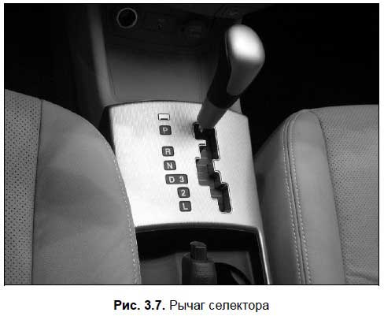
Положение Р (в этом положении находится рычаг на рис. 3.7) — это режим парковки. Он используется после полной остановки автомобиля и включения стояночного тормоза (хотя последнее не обязательно). Запускать двигатель при нахождении рычага селектора в данном положении разрешается.
Положение R используется для включения задней передачи. Переводить рычаг селектора в это положение можно только после полной остановки и при нажатой педали тормоза — в противном случае можно вывести АКПП из строя.
Положение N — это нейтральное положение, имеющееся и у механической КПП. При этом ведущие колеса отключены от двигателя, крутящий момент на них не передается, следовательно — при нахождении рычага селектора в этом положении запускать двигатель разрешается. Ни в коем случае не переводите рычаг селектора в положение N во время движения автомобиля — иначе АКПП может получить серьезные повреждения вплоть до полного выхода из строя.
Положение D — это режим движения. Он используется при движении в стандартных условиях, причем именно в данном режиме происходит автоматическое переключение передач без участия водителя (это зависит от скорости и иных факторов).
Некоторые АКПП имеют дополнительные режимы разгона (нормальный, экономичный и спортивный), выбор которых осуществляется соответствующим положением рычага селектора.
Для чего нужно сцепление, и из чего оно состоит?Сцепление автомобиляпредназначено для кратковременного отключения двигателя от КПП, а также для плавного соединения этих агрегатов при работающем моторе. Помимо прочего, сцепление не допускает резкого изменения нагрузки, обеспечивает плавное начало движения, а также защищает узлы, механизмы и детали трансмиссии от перегрузок инерционным моментом.
Примечание.
Инерционный момент создается вращающимся деталями двигателя при резком замедлении вращения коленвала.
Сцепление может иметь гидравлическийили механическийпривод. Гидравлический привод используется чаще, он включает в себя следующие элементы: педаль сцепления (находится в салоне слева от педали тормоза), главный цилиндр сцепления, рабочий цилиндр сцепления, приводная вилка, выжимной подшипник, шланги (по которым течет жидкость сцепления).
В общем случае принцип работы гидравлического сцепления выглядит следующим образом. При нажатии на педаль сцепления это усилие через специальный шток и поршень передается жидкости, и через нее поступает дальше — от поршня главного цилиндра на поршень рабочего цилиндра сцепления. Затем шток рабочего цилиндра передает это усилие приводной вилке и выжимному подшипнику, от которых усилие поступает непосредственно на механизм сцепления.
Кстати.
В качестве жидкости механизма гидравлического сцепления обычно используется тормозная жидкость.
После того как педаль сцепления отпущена, его детали под воздействием возвратных пружин возвращаются в исходное состояние.
Что касается сцепления с механическим приводом, то оно обычно используется на автомобилях с передним приводом. При этом педаль сцепления связана с приводной вилкой посредством металлического троса.
Что касается самого механизма сцепления, то оно представляет собой устройство, осуществляющее с помощью силы трения передачу крутящего момента от двигателя на КПП. Механизм сцепления обеспечивает кратковременное отсоединение двигателя от КПП и последующее плавное их соединение. Детали механизма сцепления расположены в металлическом картере, который связан с картером двигателя.
Механизм сцепления включает в себя картер сцепления, кожух, ведущий диск (маховик коленвала двигателя, от которого передается крутящий момент), нажимной диск с пружинами, ведомый диск с фрикционными накладками (рис. 3.8).
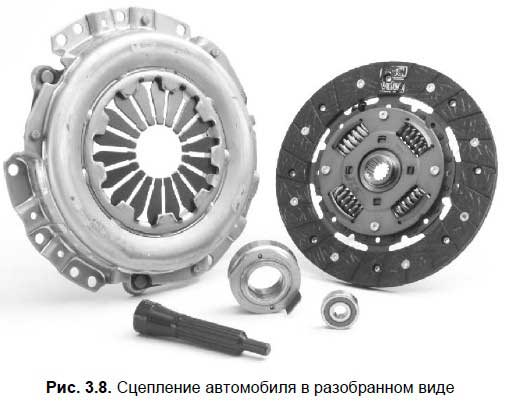
Ведомый диск с первичным валом КПП все время прижат к маховику нажимным диском под воздействием мощных пружин. В результате между маховиком, нажимным и ведомым дисками образуется большая сила трения, которая обеспечивает одновременное вращение этих деталей при работающем моторе и при отпущенной педали сцепления.
Чтобы машина тронулась с места, необходимо ведомый диск (он непосредственно связан с ведущими колесами автомобиля) прижать к вращающемуся маховику. Этот процесс называется «включение сцепления» и является довольно сложным, поскольку маховик вращается с угловой скоростью около 20–25 оборотов в секунду, а колеса стоят на месте. В связи с этим этот процесс осуществляется в три этапа (исходное положение — педаль сцепления нажата, первая передача включена).
Прежде всего следует слегка отпустить педаль сцепления: благодаря этому пружины нажимного диска подведут к маховику ведомый диск таким образом, что они слегка соприкоснутся. В результате между диском и маховиком появится небольшая сила трения и диск начнет вращение, а машина — тронется с места.
После этого нужно еще ослабить давление на педаль сцепления, отжав ее приблизительно до середины хода, и задержать ее в этом положении на пару секунд. Это необходимо для того, чтобы скорости вращения диска и маховика выровнялись. При этом машина поедет быстрее.
На заключительном этапе педаль сцепления нужно отпустить полностью. После этого нажимной и ведомый диски будут вращаться с одинаковой скоростью и станут единым целым. Маховик двигателя тоже будет вращаться с этой же скоростью. Крутящий момент будет целиком передаваться на ведущие колеса автомобиля через КПП, и машина поедет со скоростью, соответствующей включенной передаче.
Это должен знать каждый.
Каждый из трех рассмотренных этапов должен выполняться без рывков и прочих резких движений, постепенно и плавно. Многие новички отпускают педаль сцепления слишком быстро и резко, после чего машина резко дергается, а мотор глохнет. Учтите, что это может стать причиной серьезной поломки как сцепления, так и других механизмов и агрегатов.
При необходимости выключения сцепления (например, при смене передач) нужно нажать педаль сцепления до упора. При этом нажимной диск отодвинется от маховика и освободит ведомый диск. Следовательно, передача крутящего момента от двигателя к ведущим колесам прекращается и мотор работает «вхолостую».
Одним из распространенных способов движения является езда «накатом». Для этого нужно выжать педаль сцепления и перевести рычаг КПП в положение, соответствующее нейтральной передаче.
Карданная передача и главная передачаПомни об этом.
Категорически запрещается двигаться «накатом» при включенной передаче и нажатой педали сцепления: это быстро приведет к поломке сцепления.
Карданная передача на автомобилях с задним приводом используется для передачи крутящего момента от вторичного вала КПП к главной передаче (о ней мы поговорим чуть позже) под изменяющимся углом. Другими словами, карданная передача необходима для передачи крутящего момента между агрегатами, оси валов которых не совпадают и могут изменять свое положение относительно друг друга при движении автомобиля. Карданная передача включает в себя передний и задний валы, промежуточную опору с подшипником, шарниры с вилками, крестовины, шлицевое соединение и эластичную муфту.
Передача крутящего момента под изменяющимся углом достигается за счет использования механизма шарниров с вилками и крестовинами.
У автомобиля с ведущими задними колесами задний мост связан не жестко с колесами и кузовом. А вот мотор, КПП и передний вал карданной передачи крепятся к кузову прочно и неподвижно. Во время движения автомобиль подпрыгивает на неровностях проезжей части, в результате чего кузов относительно заднего моста перемещается по вертикали — то вверх, то вниз. Соответственно, постоянно изменяется угол между передним валом карданной передачи и главной передачей, находящейся в заднем мосту.
Но крутящий момент поступает как раз в это «трясущееся» место, и данный процесс должен быть постоянным и равномерным. А задний вал карданной передачи не может и не должен быть жестким. Поэтому он оснащен двумя шарнирами, с помощью которых крутящий момент передается от КПП к главной передаче ровно и стабильно даже тогда, когда машина трясется на неровной дороге.
Шлицевое соединение обеспечивает компенсацию линейного перемещения карданной передачи относительно кузова при любом изменении угла передачи крутящего момента. А эластичная муфта компенсирует резкое и излишне жесткое обращение с педалью сцепления за счет поглощения проходящей по трансмиссии ударной волны. Важность этой детали существенно возрастает, когда за рулем находится новичок.
На автомобилях с передними ведущими колесами карданная передача имеет иную конструкцию. Поскольку крутящий момент передается на передние колеса, для каждого из них предусмотрен свой карданный вал и по два шаровых шарнира (другими словами, каждое ведущее колесо имеет индивидуальную карданную передачу). Этот механизм известен под названием ШРУС, что расшифровывается как «шарнир равных угловых скоростей».
Стоит отметить, что слабым местом ШРУСов являются шарниры: при попадании частичек песка, пыли или грязи шарнир быстро выходит из строя. Для защиты от воздействия внешней среды шарниры оснащены специальными резиновыми колпаками — пыльниками. Состояние пыльников необходимо держать на контроле: если на пыльнике появились отверстия, трещины или иные механические повреждения — его нужно срочно заменить, или через короткое время придется менять весь ШРУС.
На срок службы ШРУСов, а также шарниров карданного вала заднеприводных автомобилей отрицательное влияние оказывают следующие факторы: неправильный выбор скоростного режима на ухабистых и разбитых дорогах, буксование в грязи, резкий разгон, резкий старт, езда по грунтовой дороге с глубокими колеями.
Что касается главной передачи, то у заднеприводных и переднеприводных автомобилей ее конструкция и назначение отличаются. На машинах с задним приводом она используется для увеличения крутящего момента, для его передачи на полуоси колес под прямым углом, а также для уменьшения частоты вращения ведущих колес. Главная передача состоит из пары шестерен — ведущей и ведомой, расположенных под прямым углом по отношению друг к другу, причем ведущая шестерня по размеру меньше ведомой. Эти шестерни находятся в постоянном зацеплении друг с другом. Крутящий момент, возникающий в двигателе автомобиля, через коленчатый вал, сцепление, коробку переключения передач и карданный вал, передается на ведущую шестерню, а от нее под прямым углом — на ведомую шестерню, откуда, в свою очередь, передается на полуоси колес.
При повороте автомобиля ведущие колеса должны пройти разное расстояние: колесо внутри поворота — меньшее, а колесо снаружи поворота — большее. Поскольку главная передача не обеспечивает такого эффекта, на первый взгляд поворот автомобиля должен быть невозможен. Эта проблема решается с помощью устройства под названием «дифференциал». Он автоматически распределяет крутящий момент между полуосями (соответственно — между колесами) при выполнении поворотов, а также при движении по дороге с неровным дорожным покрытием. Другими словами, с помощью дифференциала колеса получают возможность вращаться с разной угловой скоростью, что позволяет им проходить разное расстояние, не проскальзывая при этом по поверхности дороги. Дифференциал включает в себя две шестерни полуосей и две шестерни сателлитов, и в комплексе с главной передачей образует с ней единый механизм.
На автомобилях с передними ведущими колесами устройство главной передачи и дифференциала несколько отличается. Это обусловлено тем, что у таких машин мотор установлен поперек направления движения, поэтому необходимость передачи крутящего момента под прямым углом отпадает: ведь он и так передается в плоскости, соответствующей движению колес. У переднеприводных машин главная передача и дифференциал расположены непосредственно в коробке переключения передач. В остальном же функции главной передачи и дифференциала такие же, как и у машин с задним приводом.
Чтобы механизмы главной передачи и дифференциала преждевременно не изнашивались, у заднеприводных автомобилей заливается трансмиссионное масло в картер заднего моста. Визуально он выглядит как характерное утолщение в центральной части заднего моста. У переднеприводных автомобилей масло заливается в коробку передач. Уровень масла необходимо контролировать, при необходимости доливать его, а также своевременно менять износившиеся сальники, которые должны предотвращать утечку масла.
Как работает тормозная система современного автомобиля?Тормозная системаавтомобиля включает в себя рабочую тормозную систему и стояночную тормозную систему.
Задача рабочей тормозной системы — уменьшение скорости движения транспортного средства и вплоть до полной остановки. Другими словами, рабочая тормозная система должна обеспечивать преднамеренное прекращение движения транспортного средства при выполнении водителем соответствующих действий. Она приводится в действие нажатием педали, расположенной в салоне автомобиля между педалями газа и сцепления (в автомобилях с механической КПП) или слева от педали газа (в автомобилях с автоматической КПП). Приложенное к педали усилие передается через гидравлический тормозной привод на тормозные механизмы всех колес транспортного средства.
Что касается стояночной тормозной системы, то ее главная задача состоит в том, чтобы обеспечить неподвижное состояние автомобиля во время его стоянки (иначе говоря, она предотвращает самопроизвольное начало движения автомобиля). Также стояночная тормозная система применяется для удержания транспортного средства от скатывания назад при трогании с места на подъеме, а также для ручного управления тормозными механизмами задних колес с помощью рычага стояночного тормоза, находящегося, как правило, между передними сиденьями автомобиля.
Приведение в действие стояночной тормозной системы осуществляется поднятием ее рычага в верхнее положение (этот рычаг более известен под названием «ручник», рис. 3.9). При этом тормозные колодки задних колес прижимаются к дискам или барабанам (в зависимости от типа используемого тормозного механизма), и в результате колеса блокируются, что обеспечивает неподвижность транспортного средства. Когда ручник установлен в верхнее положение, то для предотвращения самопроизвольного снятия он блокируется защелкой. Поэтому, чтобы опустить рычаг, водитель должен большим пальцем нажать на специальную кнопку, которая находится на конце рычага.
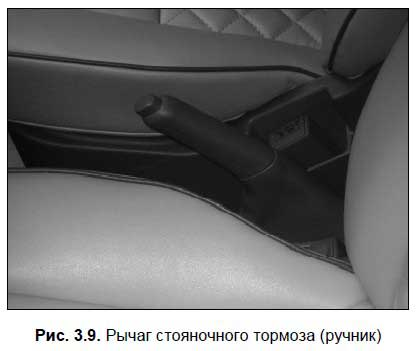
Рабочая тормозная система состоит из двух основных компонентов: тормозной привод (который передает приложенное к педали усилие) и тормозные механизмы колес (с помощью которых и осуществляется торможение). Рассмотрим подробнее каждый из них.
Устройство тормозного приводаТормозной приводпредназначен для передачи усилия от тормозной педали, на которую нажимает водитель при торможении, на колесные тормозные механизмы. Автомобили оснащаются гидравлическими тормозными приводами; рабочим элементом в них является тормозная жидкость.
Гидравлический приводсодержит следующие элементы: педаль тормоза, рабочие тормозные цилиндры, главный тормозной цилиндр (рис. 3.10), тормозные трубки (шланги), вакуумный усилитель тормозов (правда, в старых машинах этот элемент отсутствует).
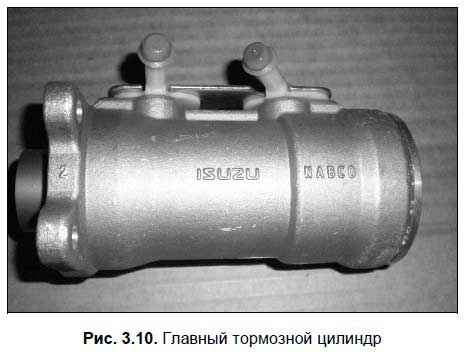
Для того чтобы замедлить движение или остановить автомобиль, водитель нажимает ногой на педаль тормоза. Через специальный шток это усилие поступает на поршень главного тормозного цилиндра, который, в свою очередь, давит на залитую в системе тормозную жидкость. Тормозная жидкость передает это усилие через топливные трубки и шланги на рабочие (колесные) тормозные цилиндры. Вследствие этого у тормозных цилиндров выдвигаются поршни, которые давят на тормозные колодки, прижимая их либо к тормозным дискам, либо к тормозным барабанам, в зависимости от используемой конструкции тормозов. Диск или барабан имеется у каждого колеса и непосредственно связан с ним, поэтому, когда колодки давят на вращающийся вместе с колесом диск (барабан), вращение колеса замедляется и, если водитель продолжает давить на педаль тормоза — полностью прекращается.
Недостатком гидравлического привода является то, что при разгерметизации тормозная жидкость полностью или частично вытекает из системы, что может привести к отказу тормозов. Для предотвращения такой ситуации в современных машинах применяются двухконтурные гидравлические тормозные приводы. Сущность их конструкции состоит в том, что они состоят из двух независимых контуров — отдельно для каждой пары колес. Отметим, что эти контуры не обязательно связывают колеса одной оси: например, левое переднее колесо может быть связано с правым задним, а правое переднее — с левым задним. Если по каким-то причинам отказывает один контур (например, вытекла тормозная жидкость, заклинило тормозной цилиндр и т. п.), то срабатывает второй. Разумеется, эффективность такого торможения заметно падает, но все же оно позволяет остановить автомобиль и избежать серьезных неприятностей.
Вакуумный усилитель тормозов(рис. 3.11) — прибор, который позволяет повысить эффективность работы тормозной системы, а также уменьшить усилие, с которым водитель должен давить на педаль для получения требуемого результата.
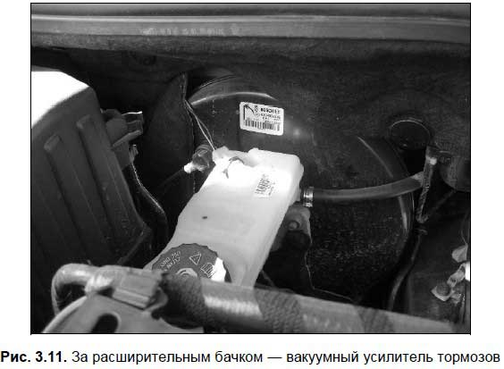
Этот усилитель связан непосредственно с главным тормозным цилиндром. Ключевой элемент вакуумного усилителя — камера, разделенная резиновой диафрагмой на две части. Одна часть камеры связана с впускным трубопроводом двигателя, в котором создается разряжение, вторая с атмосферой. В разряженном пространстве давление где-то на 20 % меньше атмосферного, и благодаря этому перепаду давлений, а также большой площади резиновой диафрагмы, создается эффект, позволяющий существенно снизить усилие при нажатии на педаль тормоза.
Тормозные механизмы колесКолесный тормозной механизм, как мы уже отмечали ранее, имеется на каждом колесе. Он предназначен для снижения скорости вращения колеса вплоть до полной его остановки за счет силы трения, возникающей между тормозными колодками и тормозным диском либо тормозным барабаном. В настоящее время автомобили оснащаются тормозными системами двух видов: дисковыми или барабанными, причем на одной машине могут использоваться тормоза как одного, так и одновременно двух видов. Например, на многих моделях ВАЗ, АЗЛК, «Форд», «Опель» и др. спереди стоят дисковые тормоза, а сзади — барабанные.
Барабанный тормозной механизм включает в себя тормозной барабан (рис. 3.12), тормозной цилиндр, тормозной щит, тормозные колодки (2 штуки) и стяжные пружины.
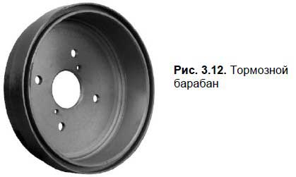
На колесной балке крепится тормозной щит, на котором установлен рабочий тормозной цилиндр. При нажатии на педаль тормоза поршни в тормозном цилиндре расходятся в стороны и оказывают давление на тормозные колодки, изготовленные в виде полуколец. Под воздействием такого давления тормозные колодки прижимаются к внутренней поверхности тормозного барабана (на который сверху надето колесо), замедляя его вращение вплоть до полной остановки.
Когда торможение нужно прекратить, водитель перестает нажимать на педаль тормоза. Соответственно, усилие на тормозные колодки больше не передается и стяжные пружины возвращают их в первоначальное положение. Колодки больше не касаются тормозного барабана, трение между ними и барабаном отсутствует и колесо получает возможность свободно вращаться.
Что касается дискового тормозного механизма (рис. 3.13), то он устроен несколько иначе и содержит следующие элементы: тормозной диск, тормозной суппорт, тормозной цилиндр (один или два) и тормозные колодки (2 штуки).
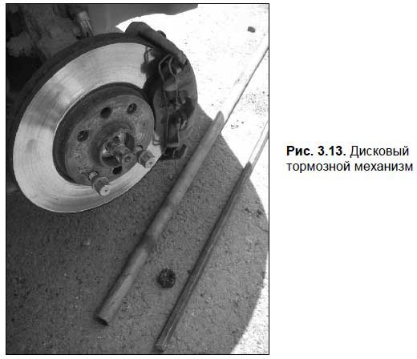
В данном случае на поворотном кулаке колеса устанавливается суппорт, внутри которого располагается тормозной цилиндр (один или два — это зависит от модели автомобиля), а также две тормозные колодки. Колодки расположены одна напротив другой так, что они находятся по разные стороны тормозного диска. Другими словами, диск располагается между тормозными колодками, при этом он вращается вместе с колесом, с которым жестко связан.
При нажатии тормозной педали из рабочих тормозных цилиндров выходят поршни и оказывают давление на тормозные колодки, которые с двух сторон прижимаются к тормозному диску. Под воздействием возникшей силы трения диск (а вместе с ним и колесо) замедляет вращение, и автомобиль останавливается. Для прекращения торможения нужно отпустить педаль тормоза. В результате поршни тормозного цилиндра вернутся в первоначальное положение, и больше не будут давить на тормозные колодки, которые, в свою очередь, «разжимаются» и «отпускают» тормозной диск. Следовательно, колесо вновь получает возможность свободного вращения.
Отметим, что тормозные колодки являются расходным материалом: из-за постоянного трения они изнашиваются, и тогда их следует заменить. Дисковые колодки нужно менять в среднем через 15 000-25 000 километров пробега, а барабанные — примерно через 50 000-60 000 километров (но они могут прослужить и больше).
Рулевое управление автомобиляРулевое управлениенеобходимо для придания движущемуся автомобилю нужного направления. Попросту говоря, куда водитель повернет руль (рис. 3.14) — туда машина и поедет.
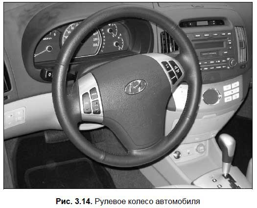
Рулевое управление включает в себя два элемента: рулевой механизм и рулевой привод.
Рулевой механизмпредназначен для передачи на рулевой привод усилия, прилагаемого водителем к рулевому колесу, находящемуся в салоне. В современных автомобилях применяются рулевые механизмы двух типов: червячный механизм и реечный механизм. Кратко рассмотрим каждый из них.
Червячный механизм рулевого управления состоит из рулевого колеса, вала рулевого колеса, червячной пары (червяк и ролик), картера червячной пары и рулевой сошки.
Элементы червячной пары (червяк и ролик) находятся в постоянном зацеплении друг с другом. Они располагаются в картере: червяк — на нижнем конце рулевого вала, а ролик — на валу рулевой сошки. При повороте рулевого колеса ролик скользит по зубьям червяка, и вал рулевой сошки начинает вращаться.
Задача червячной пары состоит в том, чтобы преобразовать вращение рулевого колеса, которым манипулирует водитель автомобиля, в поворот рулевой сошки в соответствующем направлении. В результате приложенное усилие поступает на рулевой привод, а затем — на передние колеса.
Рулевой механизм реечного типа имеет несколько иную конструкцию. Его отличительной чертой является то, что в нем вместо червячной пары задействуется пара «шестерня-рейка». При повороте рулевого колеса вращается и шестерня, которая передает приложенное к рулевому колесу усилие рейке, заставляя ее поворачиваться в соответствующем направлении (рейка находится в постоянном зацеплении с шестерней). В свою очередь, рейка это усилие передает на рулевой привод, откуда он поступает на передние колеса.
Рулевой привод, помимо передачи приложенного к рулевому колесу усилия на передние колеса автомобиля, также обеспечивает поворот колес на разные углы в зависимости от выбранной водителем траектории движения.
Важно.
В данном случае разница углов необходима для того, чтобы колеса двигались по дороге без проскальзывания — иначе покрышки будут очень быстро изнашиваться. Ведь при выполнении поворота или разворота каждое колесо «прочерчивает» индивидуальную окружность, которая отличается от окружности другого колеса. При этом внешнее колесо имеет больший радиус поворота, чем внутреннее. Но, поскольку центр поворота у них один и тот же, то угол поворота внешнего колеса должен быть больше, чем у внутреннего.
Для решения данной задачи рулевой привод оснащен специальным механизмом, который называется «рулевая трапеция» и включает в себя поворотные рычаги, рулевые тяги и шарниры рулевых тяг. Свой шарнир имеется у каждой рулевой тяги; он обеспечивает всем подвижным деталям рулевого привода возможность свободно поворачиваться в разных плоскостях относительно кузова и друг друга.
Совместно с рулевым механизмом червячного типа используется рулевой привод, включающий в себя среднюю рулевую тягу, правую и левую рулевые тяги, маятниковый рычаг, а также правый и левый поворотные рычаги колес.
Рулевой привод, используемый с рулевым механизмом реечного типа, имеет иную конструкцию. Он включает в себя две рулевые тяги (рис. 3.15), предназначенные для передачи усилия на поворотные рычаги, в результате чего колеса автомобиля поворачиваются в требуемом направлении.
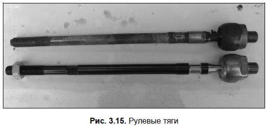
На современные машины устанавливается также гидравлический усилитель рулевого управления.Этот элемент позволяет уменьшить усилие, которое водитель должен прикладывать к рулевому колесу автомобиля. Попросту говоря, при использовании гидроусилителя руль поворачивается очень легко, это можно делать чуть ли не пальцем.
Гидроусилитель состоит из насоса, распределительного устройства и гидравлического цилиндра. При повороте рулевого колеса специальное распределительное устройство под давлением направляет жидкость в одну из полостей гидравлического цилиндра, благодаря чему и достигается существенное снижение прилагаемого водителем усилия.
Помни об этом.
Гидроусилитель рулевого управления функционирует только при работающем двигателе.
Рулевое управление является важнейшим механизмом каждого автомобиля, поэтому водитель должен следить за его состоянием и своевременно выполнять необходимую профилактику или ремонт. Эксплуатация автомобиля с неисправным рулевым управлением может привести к катастрофическим последствиям. Кстати, в соответствии с ПДД запрещается эксплуатация транспортных средств, у которых:
? суммарный люфт в рулевом управлении превышает 10 градусов;
? в рулевом управлении имеются конструктивно не предусмотренные перемещения деталей и узлов;
? в рулевом управлении резьбовые соединения не затянуты или не зафиксированы установленным способом;
? отсутствует или неисправен усилитель рулевого управления (если его использование предусмотрено конструкцией автомобиля).
Учтите.
Дальнейшее движение автомобиля категорически запрещается при любых неисправностях рулевого управления: соответствующее положение закреплено в действующих ПДД.